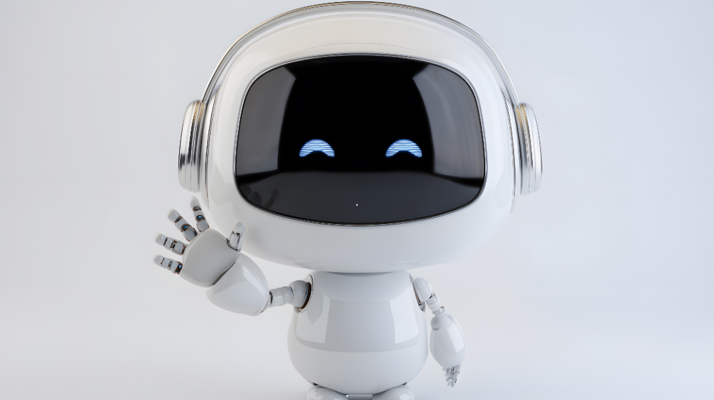

Chatbots vs Human Support : What’s Best for Your Business?
Customer expectations are rising faster than ever, pushing businesses to rethink how they deliver support. Both chatbots & human agents play powerful roles in shaping overall customer experiences. While automation can handle quick responses, real conversations still rely on emotional intelligence. Choosing the right balance impacts customer satisfaction, response time & operational cost. This article helps you understand where each option shines so you can decide what fits your business best.
1. Strengths of Chatbot Support
Key Advantages
Instant Responses
Chatbots reply within seconds, helping businesses reduce wait times & handle peak hours efficiently.
24/7 Availability
Bots remain active day & night, ensuring customers get basic information, troubleshooting steps & updates anytime.
Cost-Effective Operations
Companies save on hiring & training costs since chatbots can manage repeated queries with consistent accuracy.
Scalability During High Demand
A single bot can talk to thousands of customers at once, making it ideal for fast-growing businesses.
Data Collection & Insights
Bots automatically gather customer patterns, helping brands boost personalization & service quality.
"Imagine a world where your customers never have to wait. It's 2 AM, and a frustrated user needs a quick answer—your chatbot is there instantly, a tireless digital guardian awake while the city sleeps. But when the problem gets tough, that’s when the human touch steps in. Like a skilled diplomat, your human agent takes over, bringing empathy and deep understanding to complex issues that code simply cannot solve. This powerful duo—the speed of automation and the warmth of humanity—creates a support experience that doesn't just solve problems, but builds lasting trust."
2. Strengths of Human Support
Key Advantages
1. Empathy & Emotional Understanding
Human agents offer something chatbots cannot—real emotional connection. They can sense frustration, happiness or confusion through tone & conversation flow. This helps customers feel understood, especially during stressful or sensitive issues. Empathy builds trust, reduces conflict & makes the customer feel valued as a person, not just another ticket.
2. Personalized Problem Solving
Humans are naturally creative thinkers. They can analyze a customer’s issue from multiple angles, ask clarifying questions & suggest flexible solutions tailored to individual needs. This is helpful when problems do not follow a standard script. Personalized responses reassure customers that their situation is unique & is being handled by someone who genuinely cares.
3. Better for Complicated Issues
Some problems require deeper investigation, multiple verification steps or critical judgment. Human agents excel in these situations because they understand context, exceptions & policies better than automated systems. They can coordinate with other departments, interpret unclear information & offer accurate guidance that bots often miss.
4. Relationship Building
Strong customer relationships are built through real conversations. A friendly agent can turn a negative experience into a positive one by listening actively & showing patience. Over time, this human touch boosts brand loyalty & increases the chances of repeat business. Customers are more likely to trust companies that treat them like humans rather than transactions.
5. Cultural Understanding & Language Nuance
Human agents naturally understand tone, slang, regional expressions & cultural sensitivities. This ensures smoother communication & avoids misunderstandings that bots often face. Whether it’s adjusting language formality or understanding local behavior patterns, humans can adapt instantly—making the experience more natural & respectful.
CONCLUSION

Both chatbots & human support offer unique strengths, making them valuable in different situations. Chatbots are perfect for quick replies, repeated questions & cost-efficient operations. Human agents shine when conversations require emotional care, critical thinking or deep problem-solving. Instead of choosing one over the other, most businesses succeed by blending automation with human expertise. This balanced approach creates faster, smarter & more human-centered support experiences for every customer.